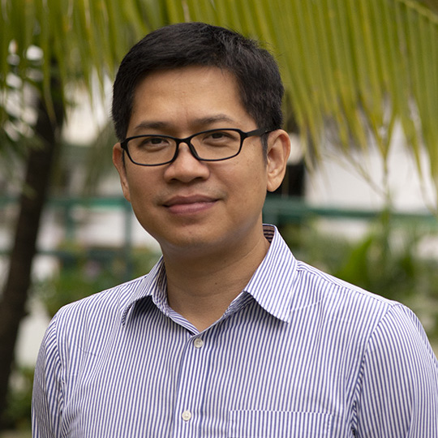
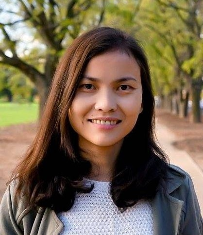
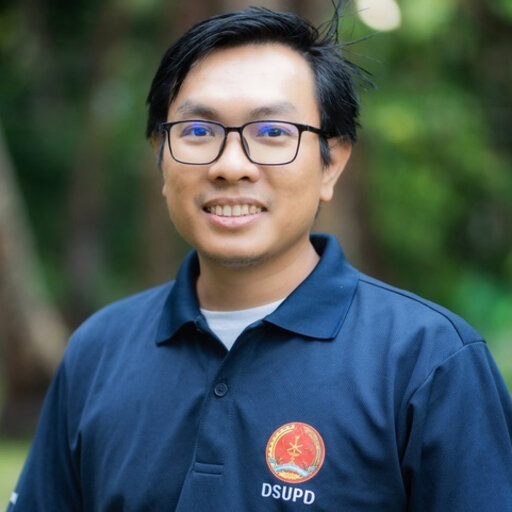
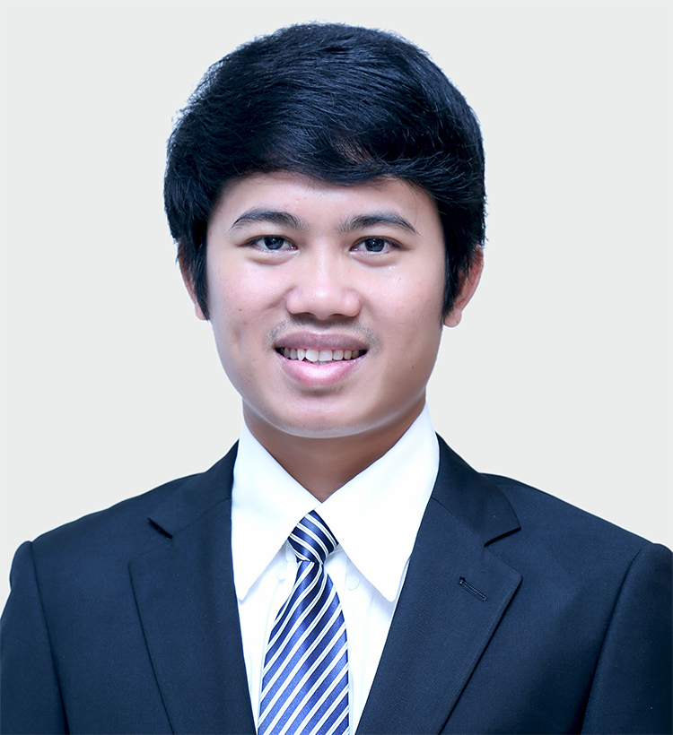

The 2nd Southeast Asia Economic Research and Development Workshop
About the Workshop
The economic history of Southeast Asia unfolds as a tale of resilience, adaptation, and transformation. Over centuries, trade, migration, and cultural exchange have left enduring imprints on the region’s economic landscape. From the mercantile empires of Srivijaya and Majapahit to the lasting legacies of European colonialism, Southeast Asia has been a crucible of economic experimentation and innovation. In the modern era, rapid industrialization, driven by export-oriented growth strategies and foreign investment, has reshaped the region. The emergence of the Asian Tigers – Singapore, Malaysia, Thailand, and Indonesia – as economic powerhouses in the last decades of the 20th century, alongside Vietnam’s recent rise, underscore the diverse pathways to development, blending state intervention with market mechanisms.
However, Southeast Asia’s economic journey has been marred by challenges. Persistent inequalities, environmental degradation, and political instability have posed significant obstacles to sustained growth and development.
Against this backdrop, understanding the historical evolution of economic thought in the region becomes paramount. Exploring the history of economic thought yields valuable insights into how economic theories and policies have been shaped by cultural, social, and political contexts. By delving into past economic ideas and experiences, decision-makers and academics can gain a deeper understanding of the region’s development trajectory, informing contemporary economic policymaking and fostering inclusive, sustainable growth.
With this background in mind, we, on behalf of the Young Scholars Initiative (YSI), the Cambodia Development Resource Institute (CDRI), and Paññāsāstra University of Cambodia, Siem Reap Campus (PUCSR), extend a warm invitation to PhD scholars and early career researchers for a two-day workshop on economic research and development in Southeast Asia. We welcome submissions focusing on various aspects of the region’s economic landscape, including but not limited to the following areas:
- History of economic thought
- Macroeconomics
- Energy and environment
- Agriculture and sustainability
- Governance and public policy
- International trade
- Labor economics and gender
The workshop aims to encourage debate and exploration of diverse perspectives on the history of economic thought in Southeast Asia and the corresponding economic policies. Our main goal is to facilitate a thorough comprehension of the role of economic thought in development, fostering international collaboration in academic research and knowledge exchange. Additionally, the workshop offers a platform for both young and senior economists to showcase their work, receive constructive feedback, and establish connections with colleagues investigating similar themes.
Organizing Committee
Kosal Nith (Young Scholars Initiative)
Jenny Symaly (Cambodia Development Resource Institute)
Sattwick Dey Biswas (Young Scholars Initiative)
Sivly Houy (Cambodia Development Resource Institute)
Sereyroth Phang (Oxfam Cambodia)
Jakkrya Sey (Cambodia Development Resource Institute)
Sinoun Hin (Ministry of Post and Communication)
Sokhimmarya Chea (Royal University of Law and Economics)
Lyhong So (Cambodia Development Resource Institute)
Sreymeng Sros (Royal University of Law and Economics)
Sophara Phorn (Ministry of Economy and Finance)
Academic Committee
Rebeca Gomez Betancourt (Université Lumière Lyon 2)
Fabio Masini (Roma Tre University)
Simona Iammarino (The University of Cagliari and London School of Economics and Political Science)
Arpan Ganguly (FLAME University)
Danilo Spinola (Birmingham City University)
Phanith Chou (Royal University of Phnom Penh)
Alejandro Márquez-Velázquez (Freie Universität Berlin)
Thirunaukarasu Subramaniam (Universiti Malaya)
Chandarany Ouch (The United Nations)
Chanrith Ngin (Cambodia Development Resource Institute)
Daniel Yonto (Xi’an Jiaotong-Liverpool University)
Sattwick Dey Biswas (Young Scholars Initiative)
Kirirom Cheav (National University of Management)
Raymond Leos (American University of Phnom Penh)
Sophat Phon (National Bank of Cambodia and Cambodia Econometric Association)
Kosal Nith (Young Scholars Initiative)
Speakers
{kind=link}
Louis-Philippe Rochon
Full Professor of Economics, Laurentian University
Louis-Philippe Rochon is Full Professor of Economics at Laurentian University, Canada, where he has been teaching since 2004. Before that, he taught at Kalamazoo College, in Michigan. He obtained his doctorate from the New School for Social Research, in 1998, earning him the ‘Frieda Wunderlich Award for Outstanding Dissertation’, for his dissertation on endogenous money and post-Keynesian economics.
In January 2019, he became the co-editor of the Review of Political Economy, and its Editor-in-Chief in 2021. Before that, he created the Review of Keynesian Economics, and was its editor from 2011 to 2018, and is now Founding Editor Emeritus. He is a Consulting Editor for the newly-created Advances in Economics Education. He is the co-director of the Monetary Policy Institute, and the editor of the @Monetaryblog.
He has been guest-editor for the Journal of Post Keynesian Economics, the International Journal of Pluralism and Economics Education, the European Journal of Economic and Social Systems, the International Journal of Political Economy, and the Journal of Banking Finance and Sustainable Development. He has published on monetary theory and policy, post-Keynesian economics, and fiscal policy.
He is the author of some 150 articles in peer-reviewed journals and books, and has written or edited close to 40 books. His Encyclopedia of Post-Keynesian Economics and A Brief History of Economic Thought, were just published. Both books are with Elgar.

Sovannroeun Samreth
Professor, Saitama University
Sovannroeun Samreth is a Professor at the Graduate School of Humanities and Social Sciences, Saitama University, Japan. In 2009, he received his Ph.D. in economics from the Graduate School of Economics, Kyoto University, Japan. He began his career as a Research Fellow at the Graduate School of Economics, Osaka University, Japan, and later as a Postdoctoral Research Fellow at the Graduate School of Economics, Kyoto University, under the program of the Japan Society for the Promotion of Science (JSPS). In 2011, he was assigned to the Graduate School of Humanities and Social Sciences at Saitama University as an Assistant Professor, and in 2013, he was promoted to tenured Associate Professor. His primary research interests include dollarization, microfinance, and governance issues in developing countries.

Chandarany Ouch
Economist, The United Nations
Chandarany Ouch is an Economist at United Nations Resident Coordinator Office (UN RCO). She has work experience in a wide range of socio-economic and development issues, including inclusive, green and resilient socio-economic policy, financing for development and SDGs, LDC graduation, economic and digital transformations, Industry 4.0, regional economic integration/ trade, employment and skill development, and women economic empowerment. Prior to joining UN RCO Cambodia, she had worked as an Economist for Myanmar, Cambodia and Lao PDR Transport and Logistics Team under the East Asia Pacific Inclusive Fellowship Program of the World Bank, a National Economist at UNDP Cambodia, a Head of Economics Research Unit at the Cambodia Development Resource Institute (CDRI), and Senior Program Manager – Economic Development Cooperation at the Australian Embassy. Chandarany holds a PhD in Economics from Monash University, Australia, and a Master in Public Policy from Lee Kuan Yew School of Public Policy, National University of Singapore.

Phanith Chou
Associate Professor, Royal University of Phnom Penh
Phanith Chou is the Environmental Economist. He Associate Professor at the Department of Natural Resource Management and Development, Faculty of Development Studies, Royal University of Phnom Penh. Dr. Phanith has a strong professional background and experience of more than 13 years in conducting research on ecosystem services assessment, environmental impact assessment, training, providing recommendations for policy development, implementing numerous projects, supervising Master and PhD students, and supporting development in Cambodia. He has demonstrated his capacity with government and international development agencies and private sectors, including Ministry of Environment, Biodiversity Landscape Fund (BLF), ASEAN Centre for Biodiversity (ACB), Conservation International, CIAT, UNEP-WCMC, GIZ, USAID, UNDP, JICA, GERES, WWF, WCS, UNESCO, UNIDO, ADB, ADPC, EEPSEA, ICEM, and international universities. Presently, he is doing research on ecosystem services valuation, REDD+, economic assessment of nature-based solutions, sustainable food systems, and digital agriculture extension services.

Dina Chhorn Centre Director of Development Economics and Trade, Cambodia Development Resource Institute
Dina Chhorn is the Centre Director of Development Economics and Trade (CDET) at the Cambodia Development Resource Institute (CDRI). Prior to this role, he was a Young Economist accredited by the European Commission as a Marie Skłodowska-Curie Fellow at the 7th Lindau Nobel Laureate Meetings in Germany. He conducted postdoctoral research at the University of Lausanne in Switzerland and obtained his PhD in Economics from the University of Bordeaux in France, where he also taught courses in Econometrics and Statistics.
Workshop Program
DAY 1: Thursday 15 August
08:30 – 09:00 • Registration
Room (TBD)
09:00 – 10:30 • Parallel I
Session 1A: Political Economy
Room (TBD)
Chair: Alexandre Reichart, Renmin University of ChinaThe Impact of Special Economic Zones on Urbanization Patterns in Cambodia
Daniel Yonto, Xi’an Jiaotong-Liverpool UniversityThe SOE Landscape in Southeast Asia: Advantages, Challenges, and International Lessons
Jimi Rambo Arranchado, University of CanterburySmith and Ricardo in Dasgupta: Marginalist Underpinnings
Sai Chikoti, Azim Premji UniversitySession 1B: Macroeconomic Policies and Sustainability
Room (TBD)
Chair: Sovannroeun Samreth, Saitama UniversityMacroeconomic Policy Space and Financing Green Structural Transformation in Southeast Asian Economies
Damon Aitken, SOAS University of LondonGlobal Debt Crisis and G20: What is Deliverable?
Shrey Goyal, Gokhale Institute of Politics and Economics, United Nations ESCAPUS Dollar or KH Dollar? An Institutional and Infrastructural Analysis of the Cambodian Monetary Framework
Clément Berthou, Université Grenoble Alpes
10:30 – 10:45 • Break
10:45 – 11:00 • Welcoming Remark
Room (TBD)
Sopeak Song, Deputy Executive Director, Cambodia Development Resource Institute
Director, Paññāsāstra University of Cambodia, Siem Reap Campus (TBD)
11:00 – 11:15 • Introduction to the Young Scholars Initiative
Room (TBD)
- Sattwick Dey Biswas, Coordinator, Young Scholars Initiative
11:15 – 12:00 • Plenary I
Room (TBD)
- The Birth of Chinese Economic Thought During the Spring and Autumn and Warring States Periods
Alexandre Reichart, Associate Professor of Economics, Renmin University of China
12:00 – 13:00 • Lunch
13:00 – 14:00 • Plenary II
Room (TBD)